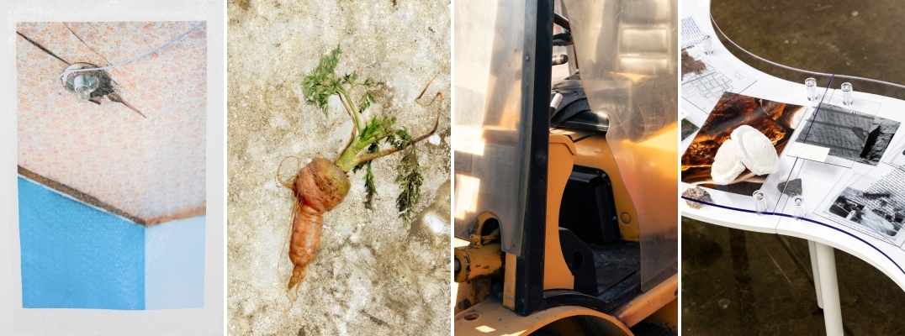
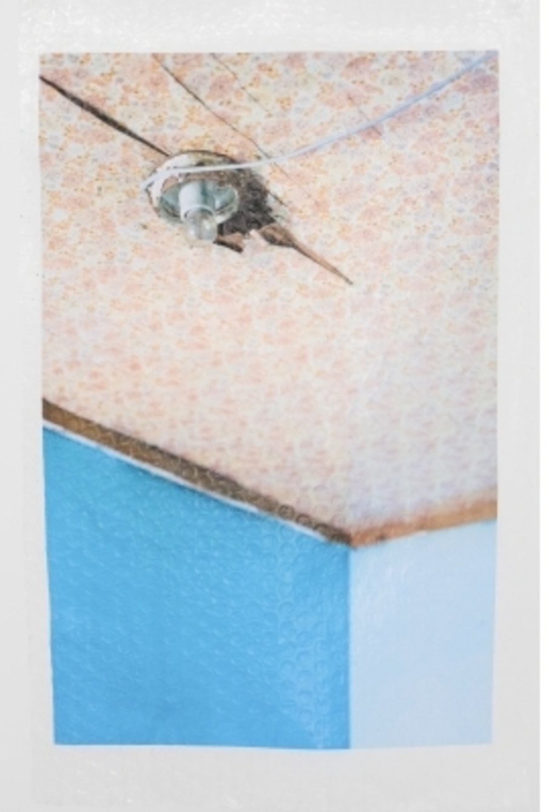
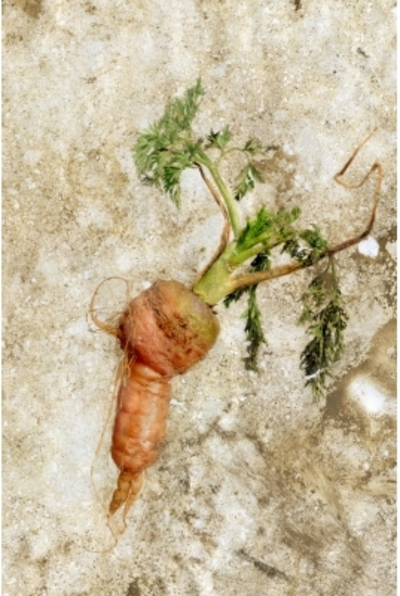
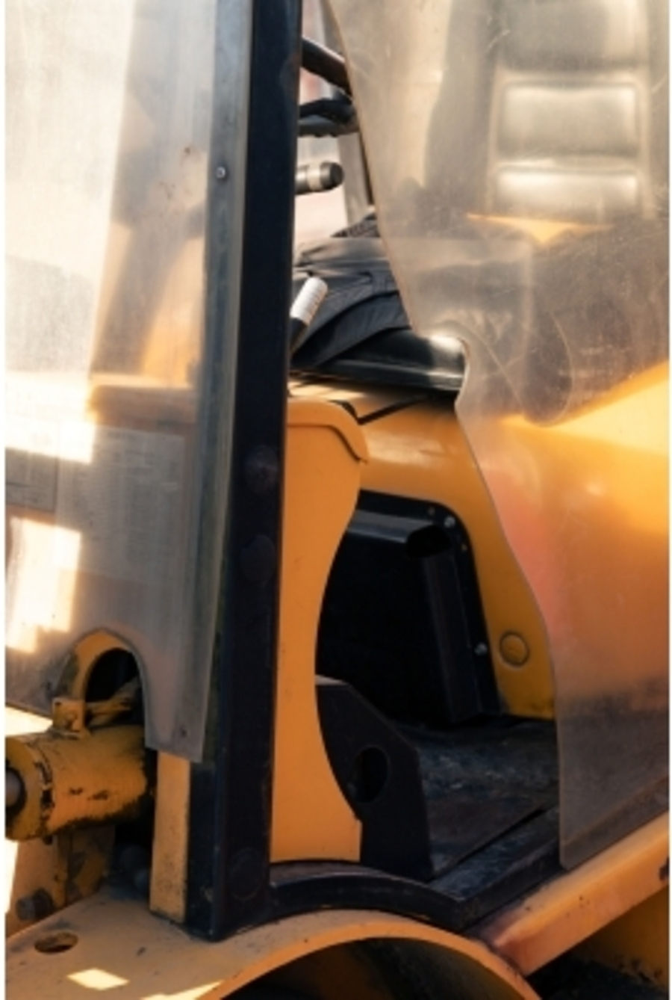
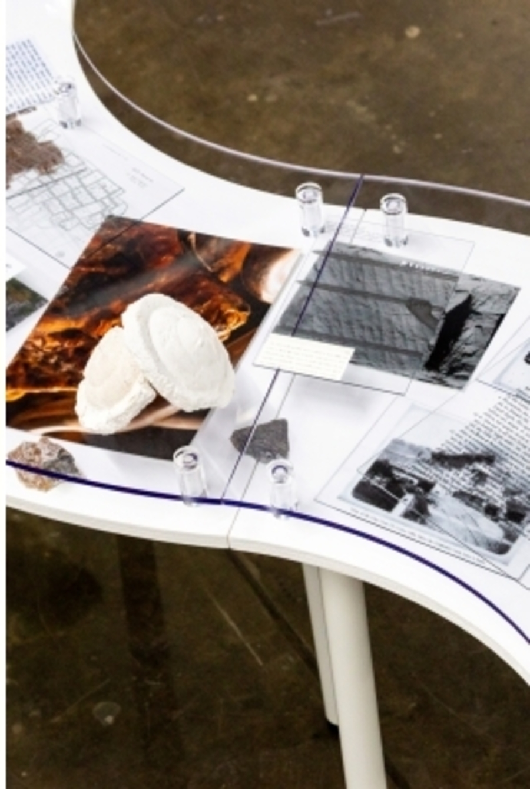

한 문장으로 시작
가장 개인적인 문장을 먼저 두고, 정보는 뒤늦게 따라오게 한다. 말의 속도와 침묵까지 편집의 리듬으로 사용한다.

DAC EP 2026 · INTERVIEW FILM PROPOSAL
네 명의 작가가 사진을 통해 시간·기억·물질·디지털 환경을 다시 감각하게 하는 방식.
EXHIBITION NARRATIVE
사진은 지나간 시간을 붙잡는 기록이면서, 물질과 기억 속에서 계속 변하고 뒤늦게 도착하는 이미지다.
영상은 네 작가를 차례로 설명하는 대신, 기억이 장소에 남고 → 이미지가 시간 속에서 변하고 → 디지털 환경과 충돌하고 → 사라진 장소가 물질의 흔적으로 돌아오는 흐름을 만든다.
DIRECTOR'S INTENT
인터뷰는 작가의 작업을 해설하는 자료가 아니라, 목소리·손·재료·장소가 한 화면 안에서 서로를 증명하는 짧은 초상이다.
가장 개인적인 문장을 먼저 두고, 정보는 뒤늦게 따라오게 한다. 말의 속도와 침묵까지 편집의 리듬으로 사용한다.
인터뷰 당시의 작품, 작업 과정, 표면, 책과 오브제를 촬영해 답변이 현장의 이미지와 바로 연결되게 한다.
마지막 답변 뒤 3–5초의 무언 장면을 남긴다. 관객이 작가의 말을 자기 감각으로 다시 읽는 시간을 만든다.




VOICE → HAND → MATTER → PLACE → AFTERIMAGE
MOTION KEY VISUAL · 12 SEC LOOP
네 작품을 하나로 합치지 않고 나란히 흐르게 한다. 각자의 시간은 독립적으로 움직이지만, 붉은 섬광이 네 화면을 한 순간의 전시로 묶는다.
UNIFIED TEASER · 30–45 SEC
작가 사진＋작품 이미지만 사용. 인터뷰 음성 없이 타이포그래피와 짧은 효과음으로 전시의 첫인상을 만든다.
암전 위 작품 디테일이 2–3프레임씩 나타난다.
인물 사진 → 집의 표면 → 작품. 느린 호흡으로 시작.
표면과 손의 행위를 빠른 매치컷으로 전환.
디지털 리듬과 1–2회의 붉은 플래시.
파편과 책을 지나 네 작가의 이름으로 연결.
《우리가 빛의 속도로 갈 수 없다면》＋기간·장소.
ARTIST 01
PARK GAHYUN
《무화과 / 요람》
PLACE · CHILDHOOD · SOLIDARITY
비산동 외할머니의 옛집으로 돌아가, 유년의 기억과 장소가 타인과의 관계로 확장되는 가능성을 바라본다.
ARTIST 02
JO WOOSUNG
《사진 김장》
MATTER · FERMENTATION · CHANGE
사진을 고정된 기록이 아니라, 시간과 환경 속에서 숙성되고 변형되는 물질로 다룬다.
ARTIST 03
JO HYUNSANG
《검은 날벌레》
SCREEN · NOISE · PERCEPTION
디지털 환경과 물질적 현실이 교차하는 지점에서, 넘쳐나는 이미지가 우리의 시각 감각을 어떻게 바꾸는지 질문한다.
ARTIST 04
TUNALEE · LEE DONGWON
《LIME STONE GHOST》
RUINS · CONCRETE · DEEP TIME
철거된 고향의 콘크리트 파편에서 시작해, 개인의 기억을 석회석과 지질학적 시간까지 확장한다.
ARTIST FILM · 3–4 MIN EACH
네 편 모두 같은 뼈대를 공유하되, 이미지의 속도와 촬영 방식은 각 작가의 작업 언어에 맞춰 달라진다.
표면·공간·생활음. 얼굴보다 작품을 먼저 보여준다.
환경 포트레이트와 작업을 시작한 개인적 이유.
장소, 자료, 과거 이미지가 답변의 맥락을 만든다.
만지고, 고르고, 배열하는 행위를 가까이 기록한다.
작품과 작가를 같은 화면에 두고 현재의 고민을 듣는다.
핵심 문장 뒤 무언 장면과 작품명으로 닫는다.
DELIVERABLES
작가 사진과 대표 작품으로 구성한 30–45초 사전 홍보영상. 인터뷰 음성 없이 전시 전체의 감각을 먼저 제시한다.
작가의 답변과 함께 작품, 작업 과정, 공간, 손의 행위, 환경 포트레이트를 한 번의 촬영 안에서 기록한다.
각 3–4분. 공통된 시각 체계 안에서 네 작가의 서로 다른 작업 언어를 전시 기간 중 순차 공개한다.
※ 실제 인터뷰 발언은 촬영 후 교체됩니다. 현재 문구는 공개된 전시 정보에 근거한 사전 기획안입니다.
ESTIMATE · FILM PRODUCTION
₩4,000,000VAT 별도
촬영 조건
ESTIMATE · PHOTOGRAPHY + TOTAL
₩5,610,000VAT 포함
전체 합계
※ 모든 평면 작품을 정면 복제하는 도록용 촬영은 본 범위에 포함하지 않습니다. 사진 RAW 파일, 개별 작품 복제 촬영, 영문 번역은 별도 비용으로 산정합니다. 합의 금액의 VAT 포함 여부는 주최 측과 최종 확인합니다.